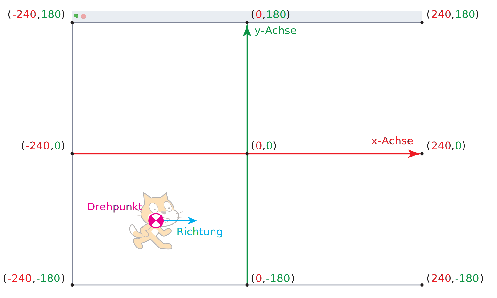
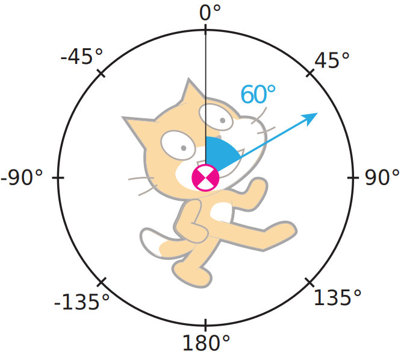

Modern Art
👩🏻🎨 🧑🏼🎨
Mit Scratch kannst du ein bekannter Künstler oder eine bekannte Künstlerin werden 😉. Damit du etwas zeichnen kannst, benötigst du Malstifte. Klicke unten links auf Erweiterung hinzufügen und dann auf Malstift, siehe Video 1.
Video 1 – Erweiterung «Malstift» hinzufügen. (Video: T. Jenni)
Die vier grundlegenden Befehle zur Steuerung des Malstiftes sind in Tab 1. erklärt. Die Befehle sind weitgehend selbsterklärend. Man kann mit ihnen die Bühne löschen, den Stift ein- oder ausschalten oder die Stiftfarbe wählen.
lösche alles |
Mit diesem Befehl werden alle Malstriche gelöscht. |
schalte Stift ein |
Der Malstift wird eingeschaltet. Sobald die Figur sich bewegt, wird sie einen Strich zeichnen. |
schalte Stift aus |
Der Malstift wird ausgeschaltet. Wenn sich die Figur bewegt, wird kein Strich mehr gezeichnet. |
setze Stiftfarbe auf (#FF0000) |
Mit diesem Befehl kannst du die Farbe des Stiftest einstellen. |
Tab. 1 – Vier grundlegende Zeichnungsbefehle.
Das rote Quadrat
Wir werden nun zusammen ein Quadrat zeichnen. Übernimm dazu den Code von Prog. 1. Damit die Figur nicht die gemalten Striche überdeckt, verkleinere sie auf 50%.
Wenn die grüne Flagge angeklickt gehe zu x:(-100) y:(100) setze Richtung auf (90) Grad lösche alles setze Stiftfarbe auf (#FF0000) schalte Stift ein gehe (200) er Schritt
Prog. 1 – Die Katze zeichnet ein Quadrat.
Wenn du das Programm ausführst, sollte die Katze nach oben links springen und eine horizontale rote Linie zeichnen. Wir werden jetzt einige wichtige Bewegungsbefehle kennenlernen, siehe Tab 2.
gehe zu x:(0) y:(0) |
Mit diesem Befehl setzt du die Figur auf der Bühne an einen bestimmten Ort setzen. |
setze Richtung auf (0) Grad |
Mit diesem Befehl kannst du die Figur auf einen bestimmten Winkel drehen. |
gehe (10) er Schritt |
Die Figur bewegt sich in die Richtung vorwärts, in welche sie gerade schaut. |
drehe dich nach rechts um (45) Grad |
Die Figur wird im Uhrzeigersinn gedreht. |
drehe dich nach links um (45) Grad |
Die Figur wird im Gegenuhrzeigersinn gedreht. |
Tab. 2 – Grundlegende Befehle um eine Figure auf der Bühne zu bewegen.
Um jetzt das rote Quadrat zu zeichnen, ersetzen wir in Prog. 1. den letzten Befehl gehe (200) er Schritt durch den folgenden Code, siehe Progr. 2.
wiederhole (4) mal gehe (200) er Schritt warte (1) Sekunden drehe dich nach rechts um (45) Grad warte (1) Sekunden ende
Prog. 2 – Zeichne ein Quadrat.
Falls es bei dir nicht funktioniert, klicke hier um die Lösung anzuschauen.
In der Lösung hat es Wartebefehle eingebaut. Wenn du das Programm ausführst, kannst du die einzelnen Schritte genau mitverfolgen, siehe Scratch 1.
Scratch zeichnet vom Startpunkt aus eine horizontale Linie, dreht sich dann um 90° im Uhrzeigersinn. Dann wieder holt er diese Schritte viermal. Am Schluss ist ein rotes Quadrat zu sehen.
Scratch 1 – Das rote Quadrat.
Bis jetzt haben wir noch nicht erklärt, was die Koordinaten (x,y) der Bühne genau bedeuten und welche Werte sie annehmen können. Auch die Richtung in Grad ist noch unklar. Versuche trotzdem die folgenden Aufgaben zu lösen. Gehe dazu von dem Programm vom roten Quadrat aus.
Aufgabe
- Verändere die Farbe des Quadrates. Zeichne es einmal grün , blau, weiss und schwarz.
- Verkleiner und vergrössere das Quadrat.
- Drehe das Quadrat ein wenig.
Orientierung auf der Bühne
Vermutlich hast du jetzt schon ein Gefühl dafür, wie man eine Figur auf der Bühne platzieren und ausrichten kann. Im folgenden werden wir jedoch das Koordinatensystem der Bühne genauer anschauen.
Die Bühne hat eine Grösse von 480 x 360 Pixeln. Der Koordinatennullpunkt (0,0) befindet sich in der Mitte, siehe Abb. 2. Die x-Achse ist nach rechts und die y-Achse nach oben orientiert. Wenn du zum Beispiel deine Figur in den rechten unteren Teil der Bühne verschieben möchtest, kannst du das mit dem Befehl gehe zu x:(100) y:(-100) machen.

Abb. 2 – Das Koordinatensystem der Bühne.
Jede Figur hat einen Drehpunkt. Wenn du eine Figur verschiebst oder drehst, bezieht sich das immer auf diesen Punkt. Eine Winkelangabe bezieht sich auf die Richtung 0°, welche bei Scratch nach oben zeigt, siehe Abb 3. Von diesem Winkel aus werden positive Winkel im Uhrzeigersinn abgetragen.
Diese Konvention ist anders als du es aus der Mathematik kennst. In der Mathematik ist 0° immer in Richtung der positiven x-Achse und positive Winkel werden im Gegenuhrzeigersinn abgetragen. Lass dich dadurch nicht verwirren. 😵💫

Abb. 3 – Winkelangabe bei der Richtung.
Wo der Drehpunkt einer Figur ist siehst du im Bereich Kostüme. Wähle im Zeichnungsbereich die Grafik aus und verschiebe sie ein wenig. Es erscheint sofort ein kleines graues Kreuzchen, der Drehpunkt, siehe Video 2.
Video 2 – Drehpunkt einer Figur verändern. (Video: T. Jenni)
Um jetzt ein wenig zu trainieren, löse die folgende Aufgabe.
Aufgabe
Zeichne die folgenden Figuren auf die Bühne. Versuche sie so gut wie möglich in die Mitte zu platzieren. Versuche Befehle mit wiederhole (x) mal zusammenzufassen, damit dein Programm möglichst kompakt wird.
|
|
|
|
Programmierte Kunst
Mit dem Computer kann man künstlerische Bilder malen. Grafiker /-innen und Künstler/-innen verwenden leider nicht Scratch dafür. Viele Künstler verwenden die Programmierumgebung processing. Das ist eine textbasierte Programmiersprache und für uns noch etwas zu schwer. Trotzdem ist es interessant, was die Künstler/-innen für Werke produzieren. Unter dem folgenden Link kannst du dir aktuelle Projekte anschauen.
Wir wollen nun versuchen selber programmierte Kunstwerke herzustellen. Dazu benötigen wir die folgenden Befehle, siehe Tab. 3.
Zufallszahl von (1) bis (6) |
Mit diesem Befehl kannst du eine zufällige Zahl im angegenen Bereich erstellen lassen. |
setze Stiftdicke auf (3) |
Wenn du mit einem dicken Stift zeichnen möchtest, kannst du das mit diesem Befehl machen. |
gehe zu (Zufallsposition v) |
Dieser Befehl verschiebt die Figur an eine zufällige Position auf der Bühne. |
Tab. 3 – Zufallszahl erzeugen, Stiftdicke setzen und Figur an Zufällige Position verschieben.
Übernimm nun das Programm von Prog 3. Zuerst wird Scratch versteckt und die Bühne gelöscht. Das Programm zeichnet 50 Striche mit zufälliger Farbe und Länge.
Wenn die grüne Flagge angeklickt
verstecke dich
lösche alles
schalte Stift ein
wiederhole (50) mal
setze Stift (Farbe v) auf (Zufallszahl von (0) bis (100))
setze Stiftdicke auf (Zufallszahl von (1) bis (3))
gehe zu (Zufallsposition v)
Prog. 3 – Moderne Kunst 1
Das Resultat sieht nicht so schlecht aus, siehe Scratch 2. Nimm dir nun einen Moment Zeit und verändere die Parameter, d.h. die Zahlen des Programms.
Scratch 2 – Moderne Kunst 1
Aufgabe
Verändere Prog. 3 nur durch kleinere Modifikationen. Hier sind einige Ideen.
- Die Striche sollen alle etwas dicker sein.
- Erzeuge doppelt so viele Striche.
- Die Striche sollen alle schwarz sein. Tipp: Dazu musst du die Helligkeit auf 0 setzen.
- Schaffst du es auch graue Striche zu erzeugen? Tipp: Du kannst die Helligkeit auf eine Zufallszahl setzen.
Nun probieren wir ein etwas anspruchsvolleres Bild zu zeichnen. Dazu benötigen wir drei neue Befehle.
(4) + (5) |
Mit diesem Befehl kannst du zwei Zahlen addieren. |
(3) * (2) |
Mit diesem Befehl kannst du zwei Zahlen multiplizieren. |
pralle vom Rand ab |
Wenn die Figur den Rand erreicht, wird sie umgedreht. |
Tab. 4 – Addition, Multiplikation und vom Rand abprallen.
Jetzt geht's los. Um das zweite Kunstwerk zu erstellen, übernimm Prog. 3. Die Hintergrundfarbe der Bühne sollte ein helleres Grau als die Stiftfarbe sein. Verwende für die Hintergrundfarbe Sättigung 0 und Helligkeit 75. Für die Stiftfarbe Sättigung 0 und Helligkeit 48.
Wenn die grüne Flagge angeklickt
verstecke dich
setze Richtung auf (45) Grad
gehe zu x:(0) y:(0)
lösche alles
setze Stiftfarbe auf (#707070)
schalte Stift ein
wiederhole (500) mal
setze Stiftdicke auf ((1)+ ((3) * (Zufallszahl von (0) bis (1))))
gehe ((10) * (Zufallszahl von (1) bis (4))) er Schritt
drehe dich nach rechts um ((90) * (Zufallszahl von (-1) bis (1))) Grad
pralle vom Rand ab
Prog. 3 – Moderne Kunst 2
Das Resultat sieht schon ziemlich gut aus. Ich bin jedoch sicher, dass du es noch verbessern kannst. Tob dich aus!
Scratch 3 – Moderne Kunst 2
Zu guter letzt kannst du ein Foto von dir verändern. Nimm am besten ein Portrait von dir und lade es als Figurkostüm hoch. Es stehen dir die folgenden Befehle zur Verfügung um dein Portrait zu verändern, siehe Tab. 5.
setze Effekt [Farbe v] auf (50) |
Die Farbe des Bildes wird verändert. |
setze Effekt [Fischauge v] auf (50) |
Das Bild wird in der Mitte stark verzerrt. Ver mutlich sieht dich ein Fisch genau so, wenn er dich anschaut. |
setze Effekt [Wirbel v] auf (50) |
Das Bild wird verwirbelt. |
Tab. 5 – Bildeffekte
Unter diesem Link findest du das Programm Scratch 4. Beachte, dass du im Kostümeditor an den Rändern des Bildes vier kleine Punkte hinmalen musst. Ansonsten stimmt der Verzerrungsmittelpunkt nicht.
Scratch 4 – Moderne Portraits
Das macht Spass ohne Ende 🙃 , ..., obwohl leider sind wir nun mit dem Kapitel am Schluss. Hoffentlich hat es euch Spass gemacht.
👩🏻🎨 🧑🏼🎨

Einsteigerkurs für den BBC micro:bit von T. Jenni, et al. ist lizenziert unter einer Creative Commons Namensnennung - Nicht-kommerziell - Weitergabe unter gleichen Bedingungen 4.0 International Lizenz.